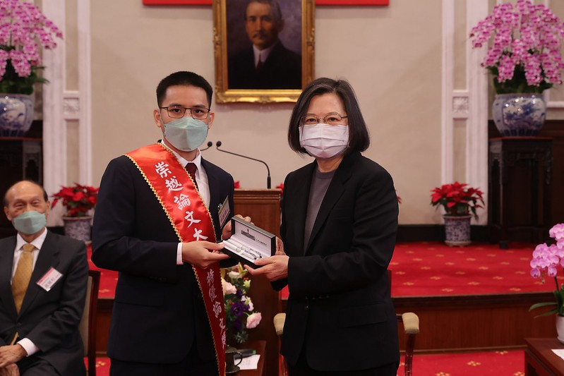
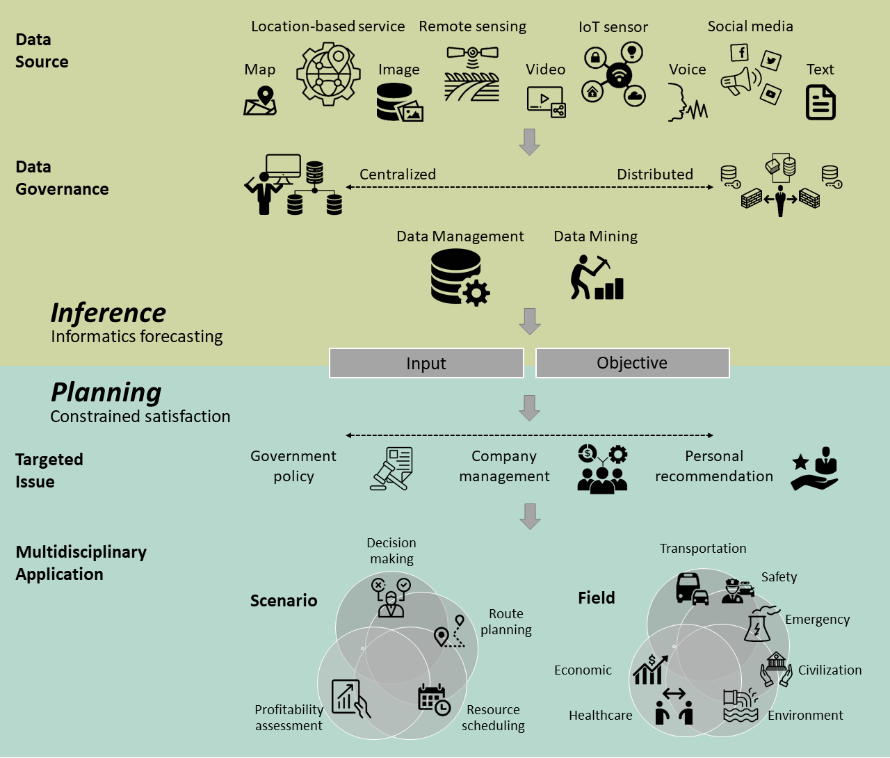

Fandel Lin
M.S. in CCE from NCKU, Taiwan
News.
>> [Jan 2022] I have secured a national scholarship in Taiwan, which is expected to cover all the funding for 4 years.
>> [Dec 2021] I was selected as the representative for award recipients  of TSC Thesis Award at the Office of the President (press release).
>> [Nov 2021] Our ACM SIGSPATIAL'21 paper - Conntrans is selected as the best paper candidate.
>> [Oct 2021] I deeply apologize for my possible delayed email response during the time I serve as airman for mandatory military service (Oct 2021 - Jan 2022).
>> [Sep 2021] I am fortunate to have been working with Prof. Hsun-Ping Hsieh since 2017 during my stay at National Cheng Kung University, where most of my research outcomes appertain to the inference-then-planning framework.
Education
M.S. in Computer and Communication Engineering
Sep 2019 - Jun 2021
B.S. in Electrical Engineering
Sep 2015 - Jun 2019
Publication
Journal Article
- Fandel Lin and Hsun-Ping Hsieh. "Traveling Transporter Problem: Arranging New Circular Route in Public Transportation System Based on Heterogeneous Non-Monotonic Urban Data" ACM Transactions on Intelligent Systems and Technology (TIST). 2021. (accept, to appear)
- Hsun-Ping Hsieh, Fandel Lin, Nai-Yu Chen, and Tzu-Hsin Yang. "A Decision Framework to Recommend Cruising Locations for Taxi Drivers under the Constraint of Booking Information" ACM Transactions on Management Information Systems (TMIS). 2021. (accept, to appear)
- Hsun-Ping Hsieh, Fandel Lin, Jiawei Jiang, Tzu-Ying Kuo, and Yu-En Chang. "Inferring Long-Term Demand of Newly Established Stations for Expansion Areas in Bike Sharing System" Applied Sciences. 2021.
- Fandel Lin and Hsun-Ping Hsieh. "A Joint Passenger Flow Inference and Path Recommender System for Deploying New Routes and Stations of Mass Transit Transportation" ACM Transactions on Knowledge Discovery from Data (TKDD). 2021.
- Hsun-Ping Hsieh and Fandel Lin. "Recommending taxi routes with an advance reservation- a multi-criteria route planner" International Journal of Urban Sciences (RJUS). 2021.
- Hsun-Ping Hsieh, Fandel Lin, Cheng-Te Li, Ian En-Hsu Yen, and Hsin-Yu Chen. "Temporal Popularity Prediction of Locations for Geographical Placement of Retail Stores" Knowledge and Information Systems (KAIS). 2019.
Conference Proceeding
- Fandel Lin and Hsun-Ping Hsieh. "Conntrans: A Two-Stage Concentric Annealing Approach for Multi-Criteria Distributed Competitive Stationary Resource Searching" ACM SIGSPATIAL International Conference on Advances in Geographic Information Systems (ACM SIGSPATIAL'21), Beijing, China, 2021. (full paper, 34/152 = 22.4%) (Invited to TSAS Best Papers Special Issue of the ACM SIGSPATIAL 2021)
- I-Ying Wu, Fandel Lin, and Hsun-Ping Hsieh. "Dual-Attention Multi-Scale Graph Convolutional Networks for Highway Accident Delay Time Prediction" ACM SIGSPATIAL International Conference on Advances in Geographic Information Systems (ACM SIGSPATIAL'21), Beijing, China, 2021. (full paper, 34/152 = 22.4%)
- Fandel Lin and Hsun-Ping Hsieh. "A Goal-Prioritized Algorithm for Additional Route Deployment on Existing Mass Transportation System" IEEE International Conference on Data Mining (ICDM'20), Sorrento, Italy, 2020. (short paper, 183/930 = 19.7%)
- Jie-Yu Fang, Fandel Lin, and Hsun-Ping Hsieh. "A Multi-Criteria System for Recommending Taxi Routes with an Advance Reservation" European Conference on Machine Learning and Principles and Practice of Knowledge Discovery in Databases (ECML-PKDD'20), Ghent, Belgium, 2020. (full paper, ADS track, 65/236 = 27.5%)
- Fandel Lin, Hsun-Ping Hsieh, and Jie-Yu Fang. "A Route-Affecting Region Based Approach for Feature Extraction in Transportation Route Planning" European Conference on Machine Learning and Principles and Practice of Knowledge Discovery in Databases (ECML-PKDD'20), Ghent, Belgium, 2020. (full paper, ADS track, 65/236 = 27.5%)
- Fandel Lin, Jie-Yu Fang, and Hsun-Ping Hsieh. "A Gaussian-Prioritized Approach for Deploying Additional Route on Existing Mass Transportation with Neural-Network-Based Passenger Flow Inference" IEEE Congress on Evolutionary Computation (IEEE CEC'20), Glasgow, United Kingdom, 2020.
- Sheng-Ting Chien, Fandel Lin, Chiunghui Tsai, and Hsun-Ping Hsieh. "An Efficient Method for Recommending Branch Locations to Reduce the Transportation Distance between Stations and Urban Events" IEEE International Conference on Mobile Data Management (IEEE MDM'20), Versailles, France, 2020. (workshop paper)
- Fandel Lin, Jie-Yu Fang, and Hsun-Ping Hsieh. "Customizing Your Own Route with QQIP. A Quantitative and Qualitative Itinerary Planner for New Transportation Routes" ACM International Conference on World Wide Web (WWW'20), Taipei, Taiwan, 2020. (demo paper)
- Fandel Lin, Shiuan-Tyng Lin, Jie-Yu Fang, and Hsun-Ping Hsieh. "Traffic Light Control with Real-Time Vehicle License Plate Recognition" ACM International Conference on World Wide Web (WWW'20), Taipei, Taiwan, 2020. (poster paper)
- Fandel Lin and Hsun-Ping Hsieh. "A Convolutional Approach for Estimating Popularity of New Branch Stores" ACM International Conference on World Wide Web (WWW'20), Taipei, Taiwan, 2020. (poster paper)
- Fandel Lin and Hsun-Ping Hsieh. "An Intelligent and Interactive Route Planning Maker for Deploying New Transportation Services" ACM SIGSPATIAL International Conference on Advances in Geographic Information Systems (ACM SIGSPATIAL'18), Seattle, WA, 2018. (SRC paper)
Thesis
- Fandel Lin. "An Inference-then-Planning Framework for Multi-Criteria Competitive and Cooperative Route Planning Built on Heterogeneous Urban Data: A Case Study on Transportation" Master Thesis, National Cheng Kung University, June 2021.
Award
International
Domestic
University
Talk
Conference Tutorial
Seminar
Service
Technical Program Committee
External Reviewer
Miscellaneous
Teaching Experience
Mar 2020 - Jul 2020
Sep 2019 - Jan 2020
Sep 2018 - Jan 2019
Jul 2017
Working Experience
Oct 2021 - Jan 2022
Aug 2017 - Oct 2021
Grant and Contract Project
Aug 2018 - Feb 2019
Jan 2020 - Oct 2021
Aug 2019 - Jan 2020
Aug 2017 - Jul 2018
Extracurricular Activity
Apr 2018
Sep 2017 - Jun 2018
Sep 2017 - Jun 2018